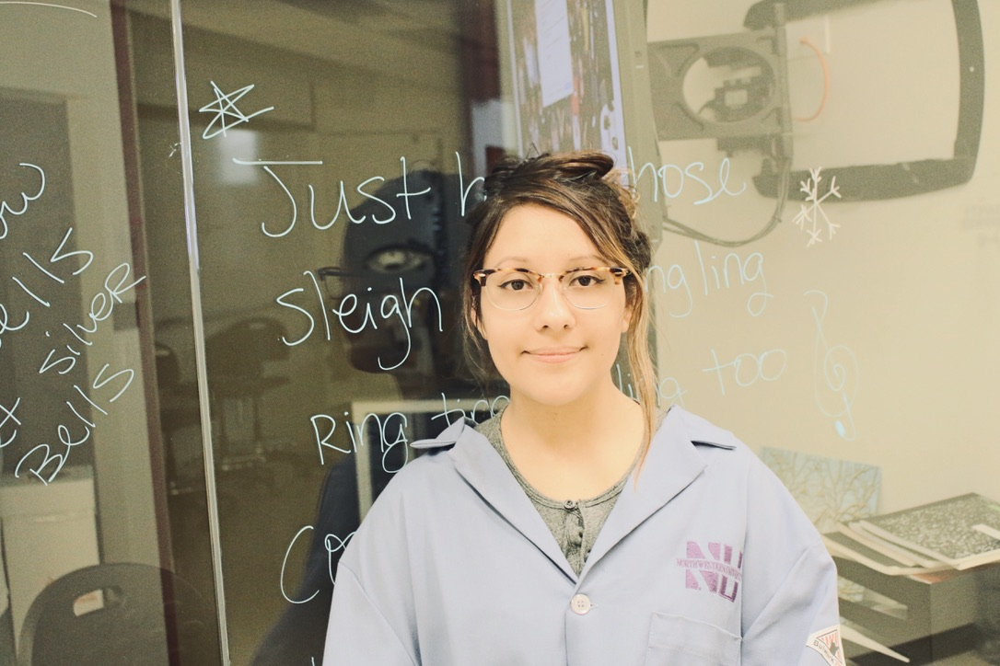

Hello, my name is Rocio Avila and I am currently working at Northwestern University. My journey begins with me obtaining a bachelor’s in chemistry and working at a Biomedical Engineering Lab in the Evanston campus. I decided to sign up for the NU Bootcamp to learn the basics of web development to later explore the application of programming languages in chemistry. This opportunity will also help me expand on my skills set and guide me through my career path.